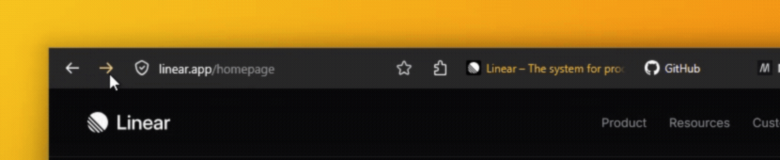
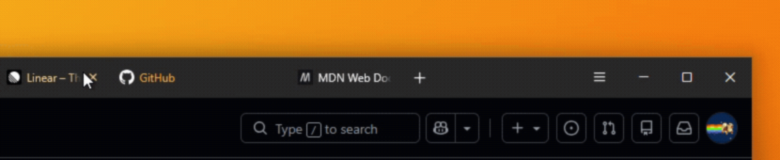
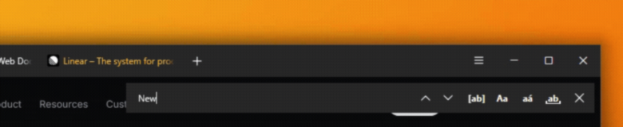

fx-01«dynamic url bar»clean by default · icons reveal on hover
one line for everything
tabs, url bar and navigation in a single row
gruvbox colors · no extensions · nothing phoning home

FoxOne merges the Firefox tab bar, URL bar and navigation buttons into a single toolbar row. The browser chrome shrinks to one line, and every website gets back the vertical space that a second and a third bar would normally take.
The address bar shows only the page address by default and reveals its icons when you hover or type. What is usually a row of permanent buttons becomes a clean line that expands on demand.
The whole theme is one userChrome.css stylesheet plus an optional userContent.css for Firefox's internal pages – no extension, no background process, nothing phoning home. Toggles switch individual features on and off without touching the rest of the stylesheet.
Every surface uses the warm Gruvbox palette, tuned for readability on Windows. All colors sit in CSS variables at the top of one file, so swapping in your own scheme is a small edit in one place.
Three details of the theme. Select any entry to see them in motion.

fx-01«dynamic url bar»clean by default · icons reveal on hover

fx-02«dynamic tabs»tucked by the hamburger · revealed on hover

fx-03«floating find bar»adapted from littlefox